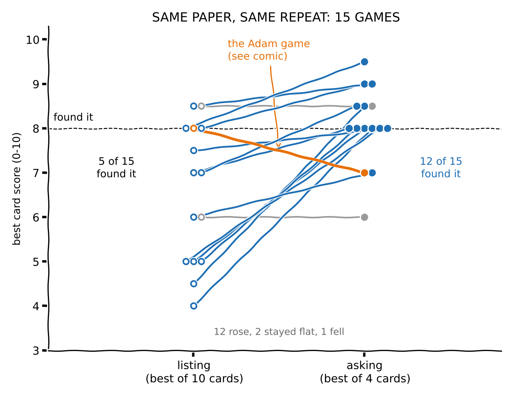

The First Question Was the Guess
We hid a recent paper's problem and showed an AI only the field before it. Asking 20 yes/no questions found the problem in 12 of 15 games; listing 10 guesses found it in 5. Then we noticed the field text had already pointed at the answer.
Draft: still being edited. This label comes off when it is final.
In episode 1, we hid a research idea and let an AI hunt for it. This time we hid the problem. The AI saw only the field as it stood before a recent paper, and hunted for the problem that paper raised. Asking 20 yes/no questions found it in 12 of 15 games, and listing 10 guesses found it in 5.11 Five papers, three games each way, one player and two model judges. Small, and the answerer is a model too.
The game
A recent paper, Re-Search, turned research into Twenty Questions: a model gets a paper's problem and asks yes/no questions until it finds the paper's idea. We flipped it. For each paper, a model that had read the paper wrote a 100-word picture of the field just before it.22 That writer is where the twist comes from: it knew the answer. The player, Claude Sonnet 5.5, saw only that text.
The player tried two ways. Listing: write 10 problem cards in one go. Asking: put 20 yes/no questions to gpt-5.4-mini, which knows the paper's problem, and write a card after every fifth question. Two judges, gpt-5.5 and Claude Opus 5.5, scored every card from 0 to 10 without knowing how it was made.33 The two judges agree closely (correlation 0.92 over 420 cards), and hand-written test cards scored where they should. An 8 means the card names the paper's actual problem, and a game that reaches 8 found it. Each paper got three games each way.
Listing gets 10 guesses and asking gets 4 cards. That favours listing, and we left it that way.
![An animated diagram of one game on the Natural Jammers paper. The parts stay in place: a field card on the left, the player in the middle, an answerer holding the paper, sealed, on the right, two judges below. Five questions travel to the answerer and the answers come back: Yes, No, No, No, No. A card goes to the judges and both give it 8. Then the player throws 10 listed cards at once, and the judges score them one by one: 5, 2, 3, 3.5, 3, 2, 2.5, 2.5, 4, 3. Last frame: asking scored 8 after 5 questions; the best of 10 listed cards scored 5.](game-flow.gif)
Five papers, five broken beliefs
We picked five papers posted between September 16 and November 8, 2026, after the models' training data ends. Each one broke a belief:
- Natural Jammers: hidden pixel patterns were thought to be helpful shortcuts. On some clean images they mislead the classifier.
- Full Fine-Tuning is not the Problem: fine-tuning all of CLIP on a few examples was thought to overfit. Adam is what fails, and plain SGD beats the lightweight methods.
- Rethinking Critic Learning in PPO: the PPO critic was thought to give credit token by token. Its values come out nearly flat.
- MLLMs Fail to Refuse when Using Tools Agentically: frontier models were thought to refuse most harmful image requests. They refuse less once they can call tools like zoom.
- Verification Trap: picking among many sampled programs by tests was thought to raise accuracy. A false premise in the prompt fools the program writer and the test writer alike.
We wrote the selection rules before searching, and swapped one pick after finding its problem in an older paper.
Asking wins
Asking beat listing in 12 of 15 head-to-head games, lost 1 and tied 2.44 No random-answer control yet. Some of this lead may come from committing to one guess, not from the answers. Each pair shares the paper and the repeat. The first asking card came after only five questions and averaged 6.9. The best of the 10 listed cards averaged 6.5. The next 15 questions added under a point.
One paper nearly gave itself away: listing also found the tool-refusal problem in all 3 games. Without that paper, asking found 9 of 12 and listing 2 of 12.

The first question was the guess
The asker's first question was usually a full guess at the problem, and it got a Yes in 13 of 15 games. It made that guess before hearing a single answer, because the field text had pointed the way.
The Jammers field says the hidden patterns "are viewed as useful shortcuts that raise clean accuracy". The first question asked whether they are "not merely useful shortcuts" and "can actually hurt clean accuracy". Yes. That game's first card opens with "The field assumes non-robust features are useful shortcuts", and both judges gave it 8.
The model that wrote the field texts had read the papers. We asked it to describe what people believe, without hinting that anything was wrong. It picked the belief each paper breaks: two fields name that belief outright, and three by implication. Naming the belief isn't stating the problem: our leak check asked only whether a field text states the problem, and every field passed. It never asked whether the text points at the belief.
The listers saw the same pointer. In all 15 list games, the first card went after the field's named belief ("Non-robust features may not be mere useful shortcuts"). Those first cards stayed vague and averaged 6.0. The asker got its guess checked, then sharpened it into the actual gap. We ran no control with random answers, so we can't say how much of that came from the answers and how much from committing to one guess for five turns.

The one loss
Listing won one game, on the Adam paper. The asker's first question got a Yes: full fine-tuning did badly because of training choices. Its third question, about the optimizer ("SGD versus AdamW") or missing regularization, got a Yes too. Then it assumed AdamW was the cure. AdamW with a small learning rate? No. SGD as an example of a bad setting? No. AdamW with a very small learning rate? No. Its best card blamed "the wrong optimizer or hyperparameters" and scored 7.
The lister in the same pairing wrote it as card 4 of 10: "AdamW's adaptive updates on tiny batches distort pretrained features, while … SGD may avoid this." Both judges gave it 8. The paper's subtitle is "Why Adam Fails and SGD Succeeds".
![A four-panel comic. Panel 1: the player asks "Was poor full fine-tuning just bad training choices?" and hears "Yes." Panel 2: "The optimizer? SGD versus AdamW?" "Yes." The player hugs a box marked AdamW. Panel 3: three quick exchanges, all No: AdamW with a small learning rate, SGD or a high learning rate, AdamW with a very small learning rate; a counter reads question 17 of 20. Panel 4: the player's card, "Prior work likely used the wrong optimizer", scored 7 (the judges gave 8 and 6), next to the lister's card, "SGD may avoid this", scored 8. Caption: Why Adam Fails and SGD Succeeds.](adam-game.png)
A hint helps the listers more
We also replayed every game with half of the paper's first odd observation added to the field. Listing went from 5 to 9 of 15 and asking from 12 to 13. On the code paper, the askers without the hint all guessed that programs and tests share a wrong assumption, but none found that the prompt planted it. One still scored 8 on a nearby framing, so it counted as a find. With the line "the input list is already sorted", all three found the problem.
Limits, and what we changed
This was five papers with three repeats each, one player and two model judges. The answerer is a model that knows the answer, and the judges also ran our leak check. The whole run cost $8.10.55 An asking game cost 7 to 9 cents, a listing game about 1 cent.
We changed one lab rule. In any test that hides an answer from a model, whoever writes the text the player sees must not have seen the answer, and writes it from older sources only. A leak check on the finished text is not enough.
So this game shows that asking can turn a guess at a named belief into the actual problem. A harder version would write each field from older papers only, and add a control where the answers are random. We haven't run it yet. Until we do, the real question stays open: can an agent find the belief to doubt when nobody has written it down?